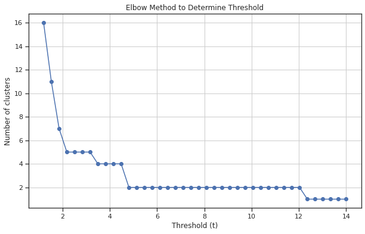

import pandas as pd, numpy as np, seaborn as sns, matplotlib.pyplot as plt
from katlas.core import *
from katlas.feature import *
from katlas.plot import *
from scipy.cluster.hierarchy import linkage, dendrogram, to_tree,fcluster
from Bio import Phylo
from io import StringIOHierarchical clustering
Setup
Data
df = Data.get_cddm().iloc[:,:-3]tyr = (df['0y']>0.7).index# Ward method to calculate linkage matrix
Z = linkage(df, method='ward')Zarray([[1.20000000e+01, 1.70000000e+01, 8.16324973e-02, 2.00000000e+00],
[1.50000000e+01, 2.89000000e+02, 8.70342690e-02, 3.00000000e+00],
[2.00000000e+00, 1.60000000e+01, 8.89836215e-02, 2.00000000e+00],
...,
[5.69000000e+02, 5.73000000e+02, 4.49856709e+00, 1.67000000e+02],
[5.65000000e+02, 5.74000000e+02, 4.58327062e+00, 2.09000000e+02],
[5.66000000e+02, 5.75000000e+02, 1.20398599e+01, 2.89000000e+02]])Plot dendrogram
sns.set(rc={"figure.dpi":300, 'savefig.dpi':300})
sns.set_context('notebook')
sns.set_style("ticks")plt.figure(figsize=(4,50))
dendrogram(Z,orientation='left',leaf_font_size=10,labels=df.index,color_threshold=0.6)
plt.title('Hierarchical Clustering Dendrogram')
# plt.xlabel('Sample index')
plt.ylabel('Distance')
plt.show()
Save Tree
def get_newick(node, parent_dist, leaf_names, newick='') -> str:
"""
Convert sciply.cluster.hierarchy.to_tree()-output to Newick format.
Referenced from: https://stackoverflow.com/questions/28222179/save-dendrogram-to-newick-format
:param node: output of sciply.cluster.hierarchy.to_tree()
:param parent_dist: output of sciply.cluster.hierarchy.to_tree().dist
:param leaf_names: list of leaf names
:param newick: leave empty, this variable is used in recursion.
:returns: tree in Newick format
"""
if node.is_leaf():
return "%s:%.2f%s" % (leaf_names[node.id], parent_dist - node.dist, newick)
else:
if len(newick) > 0:
newick = "):%.2f%s" % (parent_dist - node.dist, newick)
else:
newick = ");"
newick = get_newick(node.get_left(), node.dist, leaf_names, newick=newick)
newick = get_newick(node.get_right(), node.dist, leaf_names, newick=",%s" % (newick))
newick = "(%s" % (newick)
return newicktree = to_tree(Z, False)newick_str = get_newick(tree, tree.dist, df.index)newick_str'((((((((((((CK1E:0.21,CK1D:0.21):0.14,CK1A:0.35):0.23,((CK1G1:0.24,CK1G2:0.24):0.10,CK1G3:0.34):0.25):0.27,((((GRK2:0.35,TTBK1:0.35):0.06,PLK3:0.41):0.11,(GRK7:0.39,GRK5:0.39):0.12):0.07,GRK1:0.58):0.28):0.32,(CK2A2:0.31,CK2A1:0.31):0.87):0.13,(((TLK2:0.20,TLK1:0.20):0.38,PERK:0.58):0.22,((((TGFBR1:0.23,ALK4:0.23):0.05,ALK2:0.29):0.02,BMPR1B:0.30):0.14,ACVR2A:0.44):0.35):0.51):0.32,(((((MLK3:0.20,MLK1:0.20):0.24,COT:0.45):0.09,(((NEK7:0.18,NEK6:0.18):0.20,DSTYK:0.38):0.01,(NEK9:0.24,NEK2:0.24):0.15):0.15):0.13,((BUB1B:0.27,PLK1:0.27):0.27,PLK4:0.54):0.13):0.29,(((TBK1:0.22,IKKE:0.22):0.16,(IKKA:0.22,IKKB:0.22):0.17):0.12,ULK3:0.50):0.45):0.67):0.46,((ATR:0.36,ATM:0.36):0.26,DNAPK:0.62):1.46):1.25,((((((((((MNK2:0.33,PHKG2:0.33):0.05,PKN1:0.39):0.08,PHKG1:0.47):0.11,PKN2:0.58):0.11,((NDR2:0.37,NDR1:0.37):0.09,(LATS1:0.26,LATS2:0.26):0.20):0.24):0.26,(((((PKCT:0.26,PKCB:0.26):0.02,PKCG:0.28):0.04,PKCH:0.32):0.05,(PKCI:0.30,PKCZ:0.30):0.07):0.10,((PKCD:0.25,PKCA:0.25):0.12,PKCE:0.37):0.11):0.48):0.32,((((AURC:0.21,AURA:0.21):0.07,AURB:0.28):0.22,((PAK2:0.17,PAK1:0.17):0.04,PAK3:0.21):0.29):0.27,((PAK5:0.37,PAK6:0.37):0.04,PAK4:0.41):0.37):0.51):0.27,((((((CHK2:0.37,CHK1:0.37):0.09,SKMLCK:0.46):0.06,(DCAMKL1:0.30,DCAMKL2:0.30):0.22):0.09,(CAMK1A:0.44,MELK:0.44):0.17):0.27,((LRRK2:0.52,DAPK1:0.52):0.05,((ROCK2:0.30,ROCK1:0.30):0.15,MRCKB:0.45):0.12):0.31):0.39,(((CAMK1D:0.44,CAMK4:0.44):0.13,(((PRKD1:0.24,PRKD3:0.24):0.03,PRKD2:0.28):0.08,MAPKAPK3:0.36):0.21):0.15,(((CAMK2D:0.19,CAMK2G:0.19):0.01,CAMK2B:0.20):0.06,CAMK2A:0.26):0.45):0.55):0.28):0.24,(((((NUAK1:0.33,NUAK2:0.33):0.13,(TSSK2:0.26,TSSK1:0.26):0.21):0.03,(AMPKA2:0.26,AMPKA1:0.26):0.24):0.02,BRSK2:0.52):0.20,(((NIM1:0.21,QIK:0.21):0.10,SIK:0.31):0.07,((MARK3:0.19,MARK4:0.19):0.00,(MARK1:0.17,MARK2:0.17):0.02):0.19):0.33):1.08):0.15,(((((((((RSK2:0.21,RSK4:0.21):0.04,RSK3:0.25):0.04,P90RSK:0.29):0.05,P70S6K:0.34):0.12,(MSK2:0.26,MSK1:0.26):0.19):0.26,P70S6KB:0.71):0.08,((PIM3:0.20,PIM1:0.20):0.21,PIM2:0.40):0.39):0.12,((((PKG2:0.25,PKACB:0.25):0.02,PKACA:0.28):0.09,PKG1:0.37):0.02,PRKX:0.39):0.53):0.04,(((SGK2:0.29,SGK1:0.29):0.09,SGK3:0.38):0.11,((AKT3:0.26,AKT2:0.26):0.08,AKT1:0.33):0.16):0.46):0.98):1.40):1.16,((((((((DYRK1A:0.25,DYRK4:0.25):0.10,CDK9:0.35):0.02,HIPK2:0.37):0.19,(HIPK3:0.36,HIPK1:0.36):0.20):0.39,(MAP2K3:0.42,MAP2K4:0.42):0.54):0.11,((((CLK3:0.40,CLK1:0.40):0.12,MAP2K7:0.53):0.14,((MAPKAPK2:0.30,MAPKAPK5:0.30):0.22,HIPK4:0.52):0.15):0.10,((((DYRK3:0.20,DYRK2:0.20):0.29,CDK7:0.50):0.05,MTOR:0.55):0.09,CDK8:0.64):0.13):0.30):0.11,(((MOK:0.38,ICK:0.38):0.13,ERK5:0.51):0.25,ERK7:0.76):0.41):0.55,((((((P38B:0.24,P38A:0.24):0.09,NLK:0.33):0.02,CDK6:0.35):0.22,(((JNK2:0.16,JNK1:0.16):0.09,JNK3:0.24):0.03,(P38G:0.15,P38D:0.15):0.12):0.30):0.14,(GSK3A:0.30,GSK3B:0.30):0.41):0.13,(((ERK1:0.10,ERK2:0.10):0.28,CDK4:0.38):0.12,(((CDK2:0.18,CDK1:0.18):0.05,CDK5:0.22):0.10,CDK3:0.32):0.17):0.35):0.88):2.78):0.08,((((((STLK3:0.47,TAK1:0.47):0.15,ASK1:0.62):0.06,MOS:0.68):0.19,((MEKK3:0.45,MEKK2:0.45):0.14,(MEK1:0.37,MEK2:0.37):0.21):0.28):0.16,((((((IRAK4:0.31,MLK2:0.31):0.07,IRAK1:0.38):0.08,((NEK11:0.28,ZAK:0.28):0.08,MEKK1:0.35):0.11):0.15,BUB1:0.62):0.04,HASPIN:0.66):0.11,((WNK2:0.29,WNK3:0.29):0.02,WNK1:0.31):0.46):0.25):0.36,((((OSR1:0.47,EEF2K:0.47):0.08,(MEK5:0.45,SLK:0.45):0.10):0.13,((((((TNIK:0.16,MINK:0.16):0.02,HGK:0.17):0.05,(MST2:0.14,MST1:0.14):0.09):0.01,GCK:0.24):0.16,(NEK4:0.20,NEK1:0.20):0.20):0.03,(((TAO2:0.21,KHS1:0.21):0.06,((MST4:0.14,MST3:0.14):0.01,YSK1:0.15):0.13):0.06,TAO1:0.34):0.10):0.24):0.25,((MPSK1:0.54,PBK:0.54):0.12,((CAMKK2:0.30,CAMKK1:0.30):0.12,LKB1:0.41):0.25):0.26):0.46):3.20):7.46,((((((((KIT:0.16,CSF1R:0.16):0.07,(JAK2:0.15,JAK3:0.15):0.08):0.03,((FGFR4:0.16,ERBB4:0.16):0.01,FGFR3:0.17):0.09):0.04,((ZAP70:0.14,SYK:0.14):0.05,EGFR:0.19):0.11):0.12,(((((KDR:0.13,FLT4:0.13):0.04,FLT1:0.18):0.04,(((FGFR2:0.10,FGFR1:0.10):0.06,NTRK2:0.16):0.01,((IGF1R:0.09,INSR:0.09):0.03,INSRR:0.13):0.04):0.05):0.01,(NTRK1:0.09,NTRK3:0.09):0.14):0.02,(((((TYRO3:0.11,ROS1:0.11):0.01,ALK:0.12):0.03,MUSK:0.14):0.03,(PDGFRB:0.13,PDGFRA:0.13):0.05):0.01,((MST1R:0.12,MET:0.12):0.01,(RET:0.12,FLT3:0.12):0.01):0.05):0.07):0.17):0.12,((JAK1:0.23,TYK2:0.23):0.17,WEE1:0.40):0.14):0.07,(((((((((MERTK:0.11,AXL:0.11):0.06,PTK2B:0.17):0.07,TNK1:0.24):0.08,DDR2:0.32):0.00,CSK:0.32):0.05,TNK2:0.37):0.06,((((((FER:0.09,FES:0.09):0.07,SRMS:0.16):0.01,((FRK:0.13,BMX:0.13):0.03,TEK:0.15):0.02):0.02,(EPHA1:0.14,LTK:0.14):0.06):0.04,((EPHA8:0.09,EPHA3:0.09):0.05,(((EPHB4:0.08,EPHB1:0.08):0.01,EPHB3:0.09):0.00,EPHB2:0.09):0.06):0.09):0.06,(((EPHA6:0.11,EPHA7:0.11):0.01,(EPHA2:0.11,EPHA5:0.11):0.01):0.07,EPHA4:0.19):0.11):0.14):0.05,PTK2:0.49):0.04,((((((BLK:0.12,LCK:0.12):0.01,(LYN:0.11,YES1:0.11):0.01):0.05,(FYN:0.13,SRC:0.13):0.05):0.04,((HCK:0.15,FGR:0.15):0.02,PTK6:0.17):0.05):0.03,(ABL2:0.12,ABL1:0.12):0.13):0.02,(((TXK:0.15,TEC:0.15):0.01,BTK:0.16):0.04,ITK:0.20):0.08):0.25):0.09):0.81,((LIMK2:0.45,TESK1:0.45):0.10,(MATK:0.38,LIMK1:0.38):0.17):0.87):10.61);'# Save the Newick string to a file
with open(f'supp/CDDM.newick', 'w') as f:
f.write(newick_str)# Open the tree.newick in figtreeDetermine threshold to cut tree
# Generate a range of possible t values
t_values = np.linspace(0, 15, 40) # Example range from 0.05 to 1
num_clusters = [len(np.unique(fcluster(Z, t=t, criterion='distance'))) for t in t_values]
# Plot the elbow curve
plt.figure(figsize=(10, 6))
plt.plot(t_values, num_clusters, marker='o')
plt.title('Elbow Method to Determine Threshold')
plt.xlabel('Threshold (t)')
plt.ylabel('Number of clusters')
plt.grid(True)
plt.show()
# Generate a range of possible t values
t_values = np.linspace(1.2, 14, 40) # Example range from 0.05 to 1
num_clusters = [len(np.unique(fcluster(Z, t=t, criterion='distance'))) for t in t_values]
# Plot the elbow curve
plt.figure(figsize=(10, 6))
plt.plot(t_values, num_clusters, marker='o')
plt.title('Elbow Method to Determine Threshold')
plt.xlabel('Threshold (t)')
plt.ylabel('Number of clusters')
plt.grid(True)
plt.show()
UMAP
Determine parameters in UMAP
# the lower the value, the more localized
for i in [3,5,10,15,20,30]:
plot_cluster(df,method='umap',complexity=i,min_dist=0.6,s=5)
plt.show()
plt.close()/usr/local/lib/python3.9/dist-packages/umap/umap_.py:1945: UserWarning: n_jobs value 1 overridden to 1 by setting random_state. Use no seed for parallelism.
warn(f"n_jobs value {self.n_jobs} overridden to 1 by setting random_state. Use no seed for parallelism.")
/usr/local/lib/python3.9/dist-packages/umap/umap_.py:1945: UserWarning: n_jobs value 1 overridden to 1 by setting random_state. Use no seed for parallelism.
warn(f"n_jobs value {self.n_jobs} overridden to 1 by setting random_state. Use no seed for parallelism.")/usr/local/lib/python3.9/dist-packages/umap/umap_.py:1945: UserWarning: n_jobs value 1 overridden to 1 by setting random_state. Use no seed for parallelism.
warn(f"n_jobs value {self.n_jobs} overridden to 1 by setting random_state. Use no seed for parallelism.")
/usr/local/lib/python3.9/dist-packages/umap/umap_.py:1945: UserWarning: n_jobs value 1 overridden to 1 by setting random_state. Use no seed for parallelism.
warn(f"n_jobs value {self.n_jobs} overridden to 1 by setting random_state. Use no seed for parallelism.")
/usr/local/lib/python3.9/dist-packages/umap/umap_.py:1945: UserWarning: n_jobs value 1 overridden to 1 by setting random_state. Use no seed for parallelism.
warn(f"n_jobs value {self.n_jobs} overridden to 1 by setting random_state. Use no seed for parallelism.")/usr/local/lib/python3.9/dist-packages/umap/umap_.py:1945: UserWarning: n_jobs value 1 overridden to 1 by setting random_state. Use no seed for parallelism.
warn(f"n_jobs value {self.n_jobs} overridden to 1 by setting random_state. Use no seed for parallelism.")Complexity 5 looks good
Visualize threshold for clusters
# umap_matrix = reduce_feature(df,'umap',5,min_dist=0.6)
for i in [3,4,6,14]:
# cut tree to get cluster
cluster = fcluster(Z, t=i, criterion='distance')
print(f'q is {i}') # lower value of q, more clusters
# plot_2d(umap_matrix,legend=True, s=10, hue=cluster,palette='tab10')
plot_cluster(df, hue = cluster,method= 'umap',palette='tab10',
s = 10,legend=True,complexity = 5,min_dist=0.6)
plt.show()
plt.close()q is 3/usr/local/lib/python3.9/dist-packages/umap/umap_.py:1945: UserWarning: n_jobs value 1 overridden to 1 by setting random_state. Use no seed for parallelism.
warn(f"n_jobs value {self.n_jobs} overridden to 1 by setting random_state. Use no seed for parallelism.")
q is 4/usr/local/lib/python3.9/dist-packages/umap/umap_.py:1945: UserWarning: n_jobs value 1 overridden to 1 by setting random_state. Use no seed for parallelism.
warn(f"n_jobs value {self.n_jobs} overridden to 1 by setting random_state. Use no seed for parallelism.")
q is 6/usr/local/lib/python3.9/dist-packages/umap/umap_.py:1945: UserWarning: n_jobs value 1 overridden to 1 by setting random_state. Use no seed for parallelism.
warn(f"n_jobs value {self.n_jobs} overridden to 1 by setting random_state. Use no seed for parallelism.")q is 14/usr/local/lib/python3.9/dist-packages/umap/umap_.py:1945: UserWarning: n_jobs value 1 overridden to 1 by setting random_state. Use no seed for parallelism.
warn(f"n_jobs value {self.n_jobs} overridden to 1 by setting random_state. Use no seed for parallelism.")cluster = fcluster(Z, t=3, criterion='distance')cluster_info = pd.DataFrame(df.index)cluster_info['CDDM_big'] = clustercluster = fcluster(Z, t=0.6, criterion='distance')cluster_info['CDDM_small'] = clustercluster_info.to_csv('supp/CDDM_cluster.csv',index=False)info = Data.get_kinase_info()info| kinase | ID_coral | uniprot | ID_HGNC | group | family | subfamily_coral | subfamily | in_ST_paper | in_Tyr_paper | in_cddm | pseudo | pspa_category_small | pspa_category_big | cddm_big | cddm_small | length | human_uniprot_sequence | kinasecom_domain | nucleus | cytosol | cytoskeleton | plasma membrane | mitochondrion | Golgi apparatus | endoplasmic reticulum | vesicle | centrosome | aggresome | main_location | |
|---|---|---|---|---|---|---|---|---|---|---|---|---|---|---|---|---|---|---|---|---|---|---|---|---|---|---|---|---|---|---|
| 0 | AAK1 | AAK1 | Q2M2I8 | AAK1 | Other | NAK | None | NAK | 1 | 0 | 0 | 0 | NAK | NAK | NaN | NaN | 339 | MKKFFDSRREQGGSGLGSGSSGGGGSTSGLGSGYIGRVFGIGRQQVTVDEVLAEGGFAIVFLVRTSNGMKCALKRMFVNNEHDLQVCKREIQIMRDLSGHKNIVGYIDSSINNVSSGDVWEVLILMDFCRGGQVVNLMNQRLQTGFTENEVLQIFCDTCEAVARLHQCKTPIIHRDLKVENILLHDRGHYVLCDFGSATNKFQNPQTEGVNAVEDEIKKYTTLSYRAPEMVNLYSGKIITTKADIWALGCLLYKLCYFTLPFGESQVAICDGNFTIPDNSRYSQDMHCLIRYMLEPDPDKRPDIYQVSYFSFKLLKKECPIPNVQNSPIPAKLPEPVKASEAAAKKTQPKARLTDPIPTTETSIAPRQRPKAGQTQPNPGILPIQPALTPRKRATVQPPPQAAGSSNQPGLLASVPQPKPQAPPSQPLPQTQAKQPQAPPTPQQTPSTQAQGLPAQAQATPQHQQQLFLKQQQQQQQPPPAQQQPAGTFYQQQQAQTQQFQAVHPATQKPAIAQFPVVSQGGSQQQLMQNFYQQQQQQQQQQQQQQLATALHQQQLMTQQAALQQKPTMAAGQQPQPQPAAAPQPAPAQEPAIQAP... | VTVDEVLAEGGFAIVFLVRTSNGMKCALKRMFVNNEHDLQVCKREIQIMRDLSGHKNIVGYIDSSINNVSSGDVWEVLILMDFCRGGQVVNLMNQRLQTGFTENEVLQIFCDTCEAVARLHQCKTPIIHRDLKVENILLHDRGHYVLCDFGSATNKFQNPQTEGVNAVEDEIKKYTTLSYRAPEMVNLYSGKIITTKADIWALGCLLYKLCYFTLPFGESQVAICDGNFTIPDNSRYSQDMHCLIRYMLEPDPDKRPDIYQVSYF | NaN | NaN | NaN | NaN | NaN | NaN | NaN | NaN | NaN | NaN | None |
| 1 | ABL1 | ABL1 | P00519 | ABL1 | TK | Abl | None | Abl | 0 | 1 | 1 | 0 | ABL | ABL | 1.0 | 2.0 | 1130 | MLEICLKLVGCKSKKGLSSSSSCYLEEALQRPVASDFEPQGLSEAARWNSKENLLAGPSENDPNLFVALYDFVASGDNTLSITKGEKLRVLGYNHNGEWCEAQTKNGQGWVPSNYITPVNSLEKHSWYHGPVSRNAAEYLLSSGINGSFLVRESESSPGQRSISLRYEGRVYHYRINTASDGKLYVSSESRFNTLAELVHHHSTVADGLITTLHYPAPKRNKPTVYGVSPNYDKWEMERTDITMKHKLGGGQYGEVYEGVWKKYSLTVAVKTLKEDTMEVEEFLKEAAVMKEIKHPNLVQLLGVCTREPPFYIITEFMTYGNLLDYLRECNRQEVNAVVLLYMATQISSAMEYLEKKNFIHRDLAARNCLVGENHLVKVADFGLSRLMTGDTYTAHAGAKFPIKWTAPESLAYNKFSIKSDVWAFGVLLWEIATYGMSPYPGIDLSQVYELLEKDYRMERPEGCPEKVYELMRACWQWNPSDRPSFAEIHQAFETMFQESSISDEVEKELGKQGVRGAVSTLLQAPELPTKTRTSRRAAEHRDTTDVPEMPHSKGQGESDPLDHEPAVSPLLPRKERGPPEGGLNEDERLLPKDKK... | ITMKHKLGGGQYGEVYEGVWKKYSLTVAVKTLKEDTMEVEEFLKEAAVMKEIKHPNLVQLLGVCTREPPFYIITEFMTYGNLLDYLRECNRQEVNAVVLLYMATQISSAMEYLEKKNFIHRDLAARNCLVGENHLVKVADFGLSRLMTGDTYTAHAGAKFPIKWTAPESLAYNKFSIKSDVWAFGVLLWEIATYGMSPYPGIDLSQVYELLEKDYRMERPEGCPEKVYELMRACWQWNPSDRPSFAEIHQAF | NaN | 6.0 | NaN | 4.0 | NaN | NaN | NaN | NaN | NaN | NaN | cytosol |
| 2 | ABL2 | ABL2 | P42684 | ABL2 | TK | Abl | None | Abl | 0 | 1 | 1 | 0 | ABL | ABL | 1.0 | 2.0 | 1182 | MGQQVGRVGEAPGLQQPQPRGIRGSSAARPSGRRRDPAGRTTETGFNIFTQHDHFASCVEDGFEGDKTGGSSPEALHRPYGCDVEPQALNEAIRWSSKENLLGATESDPNLFVALYDFVASGDNTLSITKGEKLRVLGYNQNGEWSEVRSKNGQGWVPSNYITPVNSLEKHSWYHGPVSRSAAEYLLSSLINGSFLVRESESSPGQLSISLRYEGRVYHYRINTTADGKVYVTAESRFSTLAELVHHHSTVADGLVTTLHYPAPKCNKPTVYGVSPIHDKWEMERTDITMKHKLGGGQYGEVYVGVWKKYSLTVAVKTLKEDTMEVEEFLKEAAVMKEIKHPNLVQLLGVCTLEPPFYIVTEYMPYGNLLDYLRECNREEVTAVVLLYMATQISSAMEYLEKKNFIHRDLAARNCLVGENHVVKVADFGLSRLMTGDTYTAHAGAKFPIKWTAPESLAYNTFSIKSDVWAFGVLLWEIATYGMSPYPGIDLSQVYDLLEKGYRMEQPEGCPPKVYELMRACWKWSPADRPSFAETHQAFETMFHDSSISEEVAEELGRAASSSSVVPYLPRLPILPSKTRTLKKQVENKENIEGAQ... | ITMKHKLGGGQYGEVYVGVWKKYSLTVAVKTLKEDTMEVEEFLKEAAVMKEIKHPNLVQLLGVCTLEPPFYIVTEYMPYGNLLDYLRECNREEVTAVVLLYMATQISSAMEYLEKKNFIHRDLAARNCLVGENHVVKVADFGLSRLMTGDTYTAHAGAKFPIKWTAPESLAYNTFSIKSDVWAFGVLLWEIATYGMSPYPGIDLSQVYDLLEKGYRMEQPEGCPPKVYELMRACWKWSPADRPSFAETHQAF | NaN | 4.0 | 6.0 | NaN | NaN | NaN | NaN | NaN | NaN | NaN | cytoskeleton |
| 3 | TNK2 | ACK | Q07912 | TNK2 | TK | Ack | None | Ack | 0 | 1 | 1 | 0 | ACK | ACK | 1.0 | 2.0 | 1038 | MQPEEGTGWLLELLSEVQLQQYFLRLRDDLNVTRLSHFEYVKNEDLEKIGMGRPGQRRLWEAVKRRKALCKRKSWMSKVFSGKRLEAEFPPHHSQSTFRKTSPAPGGPAGEGPLQSLTCLIGEKDLRLLEKLGDGSFGVVRRGEWDAPSGKTVSVAVKCLKPDVLSQPEAMDDFIREVNAMHSLDHRNLIRLYGVVLTPPMKMVTELAPLGSLLDRLRKHQGHFLLGTLSRYAVQVAEGMGYLESKRFIHRDLAARNLLLATRDLVKIGDFGLMRALPQNDDHYVMQEHRKVPFAWCAPESLKTRTFSHASDTWMFGVTLWEMFTYGQEPWIGLNGSQILHKIDKEGERLPRPEDCPQDIYNVMVQCWAHKPEDRPTFVALRDFLLEAQPTDMRALQDFEEPDKLHIQMNDVITVIEGRAENYWWRGQNTRTLCVGPFPRNVVTSVAGLSAQDISQPLQNSFIHTGHGDSDPRHCWGFPDRIDELYLGNPMDPPDLLSVELSTSRPPQHLGGVKKPTYDPVSEDQDPLSSDFKRLGLRKPGLPRGLWLAKPSARVPGTKASRGSGAEVTLIDFGEEPVVPALRPCAPSLAQLAMDA... | LRLLEKLGDGSFGVVRRGEWDAPSGKTVSVAVKCLKPDVLSQPEAMDDFIREVNAMHSLDHRNLIRLYGVVLTPPMKMVTELAPLGSLLDRLRKHQGHFLLGTLSRYAVQVAEGMGYLESKRFIHRDLAARNLLLATRDLVKIGDFGLMRALPQNDDHYVMQEHRKVPFAWCAPESLKTRTFSHASDTWMFGVTLWEMFTYGQEPWIGLNGSQILHKIDKEGERLPRPEDCPQDIYNVMVQCWAHKPEDRPTFVALRDFL | NaN | NaN | NaN | NaN | NaN | NaN | NaN | 8.0 | NaN | 2.0 | vesicle |
| 4 | ACVR2A | ACTR2 | P27037 | ACVR2A | TKL | STKR | STKR2 | STKR2 | 1 | 0 | 1 | 0 | TGFBR | acidophilic | 5.0 | 49.0 | 352 | MGAAAKLAFAVFLISCSSGAILGRSETQECLFFNANWEKDRTNQTGVEPCYGDKDKRRHCFATWKNISGSIEIVKQGCWLDDINCYDRTDCVEKKDSPEVYFCCCEGNMCNEKFSYFPEMEVTQPTSNPVTPKPPYYNILLYSLVPLMLIAGIVICAFWVYRHHKMAYPPVLVPTQDPGPPPPSPLLGLKPLQLLEVKARGRFGCVWKAQLLNEYVAVKIFPIQDKQSWQNEYEVYSLPGMKHENILQFIGAEKRGTSVDVDLWLITAFHEKGSLSDFLKANVVSWNELCHIAETMARGLAYLHEDIPGLKDGHKPAISHRDIKSKNVLLKNNLTACIADFGLALKFEAGKSAGDTHGQVGTRRYMAPEVLEGAINFQRDAFLRIDMYAMGLVLWELASRCTAADGPVDEYMLPFEEEIGQHPSLEDMQEVVVHKKKRPVLRDYWQKHAGMAMLCETIEECWDHDAEARLSAGCVGERITQMQRLTNIITTEDIVTVVTMVTNVDFPPKESSL | LQLLEVKARGRFGCVWKAQLLNEYVAVKIFPIQDKQSWQNEYEVYSLPGMKHENILQFIGAEKRGTSVDVDLWLITAFHEKGSLSDFLKANVVSWNELCHIAETMARGLAYLHEDIPGLKDGHKPAISHRDIKSKNVLLKNNLTACIADFGLALKFEAGKSAGDTHGQVGTRRYMAPEVLEGAINFQRDAFLRIDMYAMGLVLWELASRCTAADGPVDEYMLPFEEEIGQHPSLEDMQEVVVHKKKRPVLRDYWQKHAGMAMLCETIEECWDHDAEARLSAGCVGERI | NaN | 5.0 | NaN | NaN | NaN | NaN | 5.0 | NaN | NaN | NaN | cytosol |
| ... | ... | ... | ... | ... | ... | ... | ... | ... | ... | ... | ... | ... | ... | ... | ... | ... | ... | ... | ... | ... | ... | ... | ... | ... | ... | ... | ... | ... | ... | ... |
| 518 | YSK1 | YSK1 | O00506 | STK25 | STE | STE20 | YSK | YSK | 1 | 0 | 1 | 0 | MAP4K | MAP4K | 2.0 | 6.0 | 426 | MAHLRGFANQHSRVDPEELFTKLDRIGKGSFGEVYKGIDNHTKEVVAIKIIDLEEAEDEIEDIQQEITVLSQCDSPYITRYFGSYLKSTKLWIIMEYLGGGSALDLLKPGPLEETYIATILREILKGLDYLHSERKIHRDIKAANVLLSEQGDVKLADFGVAGQLTDTQIKRNTFVGTPFWMAPEVIKQSAYDFKADIWSLGITAIELAKGEPPNSDLHPMRVLFLIPKNSPPTLEGQHSKPFKEFVEACLNKDPRFRPTAKELLKHKFITRYTKKTSFLTELIDRYKRWKSEGHGEESSSEDSDIDGEAEDGEQGPIWTFPPTIRPSPHSKLHKGTALHSSQKPAEPVKRQPRSQCLSTLVRPVFGELKEKHKQSGGSVGALEELENAFSLAEESCPGISDKLMVHLVERVQRFSHNRNHLTSTR | FTKLDRIGKGSFGEVYKGIDNHTKEVVAIKIIDLEEAEDEIEDIQQEITVLSQCDSPYITRYFGSYLKSTKLWIIMEYLGGGSALDLLKPGPLEETYIATILREILKGLDYLHSERKIHRDIKAANVLLSEQGDVKLADFGVAGQLTDTQIKRNTFVGTPFWMAPEVIKQSAYDFKADIWSLGITAIELAKGEPPNSDLHPMRVLFLIPKNSPPTLEGQHSKPFKEFVEACLNKDPRFRPTAKELLKHKFI | NaN | 6.0 | NaN | NaN | NaN | 4.0 | NaN | NaN | NaN | NaN | cytosol |
| 519 | ZAK | ZAK | Q9NYL2 | MAP3K20 | TKL | MLK | ZAK | ZAK | 1 | 0 | 1 | 0 | MAP3K | MAP3K | 2.0 | 9.0 | 800 | MSSLGASFVQIKFDDLQFFENCGGGSFGSVYRAKWISQDKEVAVKKLLKIEKEAEILSVLSHRNIIQFYGVILEPPNYGIVTEYASLGSLYDYINSNRSEEMDMDHIMTWATDVAKGMHYLHMEAPVKVIHRDLKSRNVVIAADGVLKICDFGASRFHNHTTHMSLVGTFPWMAPEVIQSLPVSETCDTYSYGVVLWEMLTREVPFKGLEGLQVAWLVVEKNERLTIPSSCPRSFAELLHQCWEADAKKRPSFKQIISILESMSNDTSLPDKCNSFLHNKAEWRCEIEATLERLKKLERDLSFKEQELKERERRLKMWEQKLTEQSNTPLLPSFEIGAWTEDDVYCWVQQLVRKGDSSAEMSVYASLFKENNITGKRLLLLEEEDLKDMGIVSKGHIIHFKSAIEKLTHDYINLFHFPPLIKDSGGEPEENEEKIVNLELVFGFHLKPGTGPQDCKWKMYMEMDGDEIAITYIKDVTFNTNLPDAEILKMTKPPFVMEKWIVGIAKSQTVECTVTYESDVRTPKSTKHVHSIQWSRTKPQDEVKAVQLAIQTLFTNSDGNPGSRSDSSADCQWLDTLRMRQIASNTSLQRSQSNPI... | LQFFENCGGGSFGSVYRAKWISQDKEVAVKKLLKIEKEAEILSVLSHRNIIQFYGVILEPPNYGIVTEYASLGSLYDYINSNRSEEMDMDHIMTWATDVAKGMHYLHMEAPVKVIHRDLKSRNVVIAADGVLKICDFGASRFHNHTTHMSLVGTFPWMAPEVIQSLPVSETCDTYSYGVVLWEMLTREVPFKGLEGLQVAWLVVEKNERLTIPSSCPRSFAELLHQCWEADAKKRPSFKQIISI | 5.0 | 5.0 | NaN | NaN | NaN | NaN | NaN | NaN | NaN | NaN | nucleus |
| 520 | ZAP70 | ZAP70 | P43403 | ZAP70 | TK | Syk | None | Syk | 0 | 1 | 1 | 0 | SYK and FAK | SYK and FAK | 1.0 | 3.0 | 619 | MPDPAAHLPFFYGSISRAEAEEHLKLAGMADGLFLLRQCLRSLGGYVLSLVHDVRFHHFPIERQLNGTYAIAGGKAHCGPAELCEFYSRDPDGLPCNLRKPCNRPSGLEPQPGVFDCLRDAMVRDYVRQTWKLEGEALEQAIISQAPQVEKLIATTAHERMPWYHSSLTREEAERKLYSGAQTDGKFLLRPRKEQGTYALSLIYGKTVYHYLISQDKAGKYCIPEGTKFDTLWQLVEYLKLKADGLIYCLKEACPNSSASNASGAAAPTLPAHPSTLTHPQRRIDTLNSDGYTPEPARITSPDKPRPMPMDTSVYESPYSDPEELKDKKLFLKRDNLLIADIELGCGNFGSVRQGVYRMRKKQIDVAIKVLKQGTEKADTEEMMREAQIMHQLDNPYIVRLIGVCQAEALMLVMEMAGGGPLHKFLVGKREEIPVSNVAELLHQVSMGMKYLEEKNFVHRDLAARNVLLVNRHYAKISDFGLSKALGADDSYYTARSAGKWPLKWYAPECINFRKFSSRSDVWSYGVTMWEALSYGQKPYKKMKGPEVMAFIEQGKRMECPPECPPELYALMSDCWIYKWEDRPDFLTVEQRMRAC... | LIADIELGCGNFGSVRQGVYRMRKKQIDVAIKVLKQGTEKADTEEMMREAQIMHQLDNPYIVRLIGVCQAEALMLVMEMAGGGPLHKFLVGKREEIPVSNVAELLHQVSMGMKYLEEKNFVHRDLAARNVLLVNRHYAKISDFGLSKALGADDSYYTARSAGKWPLKWYAPECINFRKFSSRSDVWSYGVTMWEALSYGQKPYKKMKGPEVMAFIEQGKRMECPPECPPELYALMSDCWIYKWEDRPDFL | 3.0 | 5.0 | NaN | 2.0 | NaN | NaN | NaN | NaN | NaN | NaN | cytosol |
| 521 | EEF2K | eEF2K | O00418 | EEF2K | Atypical | Alpha | eEF2K | eEF2K | 1 | 0 | 1 | 0 | ALPHA/MLK | ALPHA/MLK | 2.0 | 7.0 | 725 | MADEDLIFRLEGVDGGQSPRAGHDGDSDGDSDDEEGYFICPITDDPSSNQNVNSKVNKYYSNLTKSERYSSSGSPANSFHFKEAWKHAIQKAKHMPDPWAEFHLEDIATERATRHRYNAVTGEWLDDEVLIKMASQPFGRGAMRECFRTKKLSNFLHAQQWKGASNYVAKRYIEPVDRDVYFEDVRLQMEAKLWGEEYNRHKPPKQVDIMQMCIIELKDRPGKPLFHLEHYIEGKYIKYNSNSGFVRDDNIRLTPQAFSHFTFERSGHQLIVVDIQGVGDLYTDPQIHTETGTDFGDGNLGVRGMALFFYSHACNRICESMGLAPFDLSPRERDAVNQNTKLLQSAKTILRGTEEKCGSPQVRTLSGSRPPLLRPLSENSGDENMSDVTFDSLPSSPSSATPHSQKLDHLHWPVFSDLDNMASRDHDHLDNHRESENSGDSGYPSEKRGELDDPEPREHGHSYSNRKYESDEDSLGSSGRVCVEKWNLLNSSRLHLPRASAVALEVQRLNALDLEKKIGKSILGKVHLAMVRYHEGGRFCEKGEEWDQESAVFHLEHAANLGELEAIVGLGLMYSQLPHHILADVSLKETEENKTK... | VTGEWLDDEVLIKMASQPFGRGAMRECFRTKKLSNFLHAQQWKGASNYVAKRYIEPVDRDVYFEDVRLQMEAKLWGEEYNRHKPPKQVDIMQMCIIELKDRPGKPLFHLEHYIEGKYIKYNSNSGFVRDDNIRLTPQAFSHFTFERSGHQLIVVDIQGVGDLYTDPQIHTETGTDFGDGNLGVRGMALFFYSHACNRIC | NaN | 9.0 | NaN | 1.0 | NaN | NaN | NaN | NaN | NaN | NaN | cytosol |
| 522 | FAM20C | FAM20C | Q8IXL6 | FAM20C | Atypical | FAM20C | None | FAM20C | 1 | 0 | 0 | 0 | FAM20C | acidophilic | NaN | NaN | 562 | MKMMLVRRFRVLILMVFLVACALHIALDLLPRLERRGARPSGEPGCSCAQPAAEVAAPGWAQVRGRPGEPPAASSAAGDAGWPNKHTLRILQDFSSDPSSNLSSHSLEKLPPAAEPAERALRGRDPGALRPHDPAHRPLLRDPGPRRSESPPGPGGDASLLARLFEHPLYRVAVPPLTEEDVLFNVNSDTRLSPKAAENPDWPHAGAEGAEFLSPGEAAVDSYPNWLKFHIGINRYELYSRHNPAIEALLHDLSSQRITSVAMKSGGTQLKLIMTFQNYGQALFKPMKQTREQETPPDFFYFSDYERHNAEIAAFHLDRILDFRRVPPVAGRMVNMTKEIRDVTRDKKLWRTFFISPANNICFYGECSYYCSTEHALCGKPDQIEGSLAAFLPDLSLAKRKTWRNPWRRSYHKRKKAEWEVDPDYCEEVKQTPPYDSSHRILDVMDMTIFDFLMGNMDRHHYETFEKFGNETFIIHLDNGRGFGKYSHDELSILVPLQQCCRIRKSTYLRLQLLAKEEYKLSLLMAESLRGDQVAPVLYQPHLEALDRRLRVVLKAVRDCVERNGLHSVVDDDLDTEHRAASAR | FISPANNICFYGECSYYCSTEHALCGKPDQIEGSLAAFLPDLSLAKRKTWRNPWRRSYHKRKKAEWEVDPDYCEEVKQTPPYDSSHRILDVMDMTIFDFLMGNMDRHHYETFEKFGNETFIIHLDNGRGFGKYSHDELSILVPLQQCCRIRKSTYLRLQLLAKEEYKLSLLMAESLRGDQVAPVLYQPHLEALDRRLRVVLKAVRDCVERNG | NaN | 2.0 | NaN | NaN | NaN | 7.0 | 1.0 | NaN | NaN | NaN | Golgi apparatus |
523 rows × 30 columns
Plot UMAP
info = Data.get_kinase_info().query('pseudo=="0"')We have already merge the cluster in the info, so no need to merge here
info = info.set_index('kinase')colored by CDDM cluster
plot_cluster(df, hue = info.cddm_big,method= 'umap',palette='tab10',
s = 10,legend=True,complexity = 5,min_dist=0.6)/usr/local/lib/python3.9/dist-packages/umap/umap_.py:1945: UserWarning: n_jobs value 1 overridden to 1 by setting random_state. Use no seed for parallelism.
warn(f"n_jobs value {self.n_jobs} overridden to 1 by setting random_state. Use no seed for parallelism.")
colored by kinase family/group
from fastcore.xtras import *color_group = load_pickle('raw/kinase_color.pkl')plot_cluster(df, hue = info.group,method= 'umap',palette=color_group,
s = 10,legend=True,complexity = 5,min_dist=0.6)/usr/local/lib/python3.9/dist-packages/umap/umap_.py:1945: UserWarning: n_jobs value 1 overridden to 1 by setting random_state. Use no seed for parallelism.
warn(f"n_jobs value {self.n_jobs} overridden to 1 by setting random_state. Use no seed for parallelism.")PSPA category
pspa_color = pd.read_csv('raw/pspa_color.csv')pspa_color = pspa_color.set_index('Label')['Color'].to_dict()info.pspa_category_big.value_counts()basophilic 87
pro-directed 45
acidophilic 32
MAP3K 17
MAP4K 17
ALPHA/MLK 15
FGF and VEGF receptors 13
RIPK/WNK 13
PKC 12
Ephrin receptors 11
assorted 11
NEK/ASK 10
EIF2AK/TLK 10
PDGF receptors 9
SRC 8
TEC 7
CMGC 7
TAM receptors 7
ULK/TTBK 7
Insulin and neurotrophin receptors 6
Non-canonical (WEE) 6
JAK 5
EGF receptors 5
LKB/CAMKK 5
IKK 4
PIKK 4
Non-canonical (PDHK) 3
NAK 3
SYK and FAK 3
Discoidin domain receptors 2
ABL 2
assorted_Non-canonical (PDHK) 2
ACK 2
assorted_Non-canomical (PDHK) 1
LKB/CAMKK_Non-canonical (WEE) 1
Name: pspa_category_big, dtype: int64info.columnsIndex(['ID_coral', 'uniprot', 'ID_HGNC', 'group', 'family', 'subfamily_coral',
'subfamily', 'in_ST_paper', 'in_Tyr_paper', 'in_cddm', 'pseudo',
'pspa_category_small', 'pspa_category_big', 'cddm_big', 'cddm_small',
'length', 'human_uniprot_sequence', 'kinasecom_domain', 'nucleus',
'cytosol', 'cytoskeleton', 'plasma membrane', 'mitochondrion',
'Golgi apparatus', 'endoplasmic reticulum', 'vesicle', 'centrosome',
'aggresome', 'main_location'],
dtype='object')plot_cluster(df, hue = info.pspa_category_big.str.split('_').str[0],
method= 'umap',palette=pspa_color,
s = 10,legend=True,complexity = 5,min_dist=0.6)/usr/local/lib/python3.9/dist-packages/umap/umap_.py:1945: UserWarning: n_jobs value 1 overridden to 1 by setting random_state. Use no seed for parallelism.
warn(f"n_jobs value {self.n_jobs} overridden to 1 by setting random_state. Use no seed for parallelism.")Main location
plot_cluster(df, hue = info.main_location,method= 'umap',palette='tab20',
s = 10,legend=True,complexity = 5,min_dist=0.6)/usr/local/lib/python3.9/dist-packages/umap/umap_.py:1945: UserWarning: n_jobs value 1 overridden to 1 by setting random_state. Use no seed for parallelism.
warn(f"n_jobs value {self.n_jobs} overridden to 1 by setting random_state. Use no seed for parallelism.")